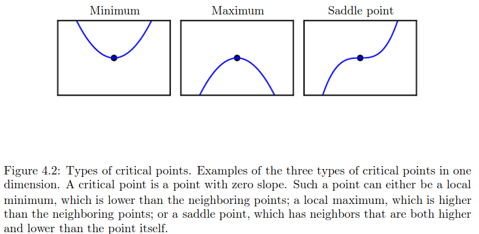
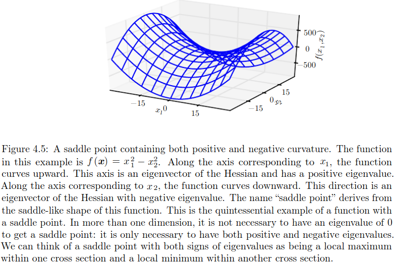
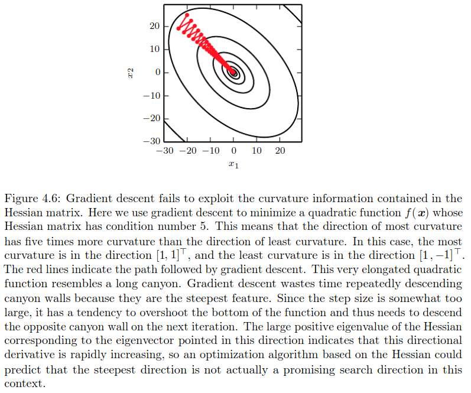
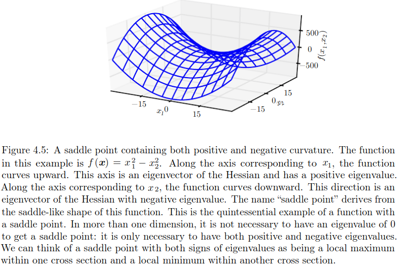
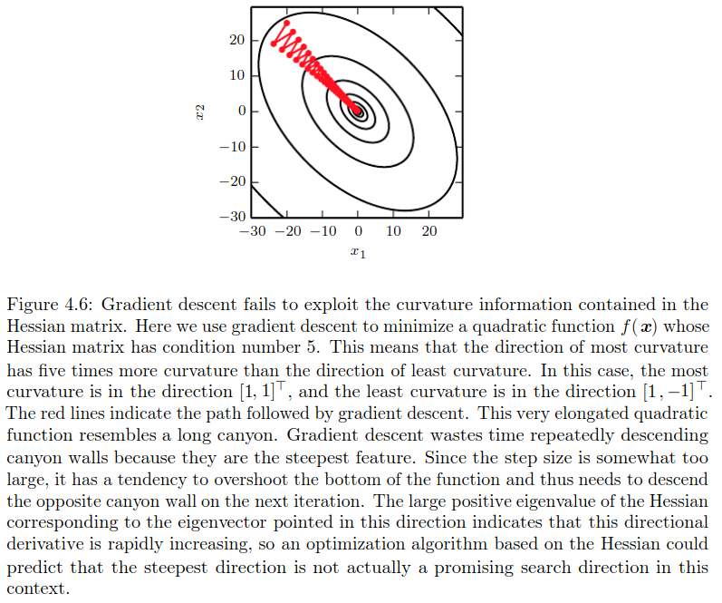

4 Numerical Computation
A
4.1 Overflow and Underflow
4.2 Poor conditioning
4.3 Gradient Based Optimization
A

 



4.4 Constrained Optimization
A
The KKT approach generalizes the method of Lagrange multipliers, which allows equality constraints but not inequality constraints.